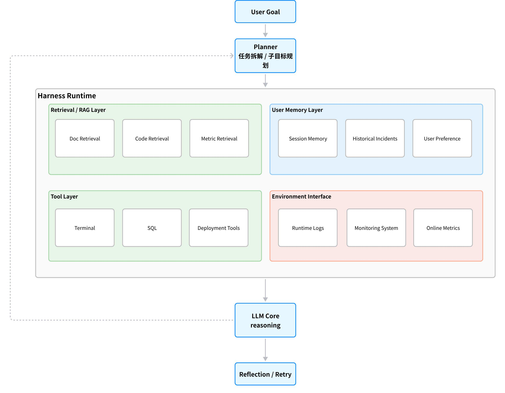
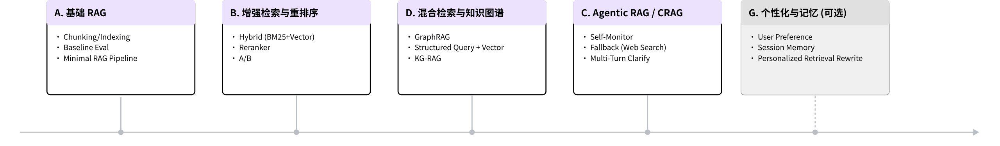
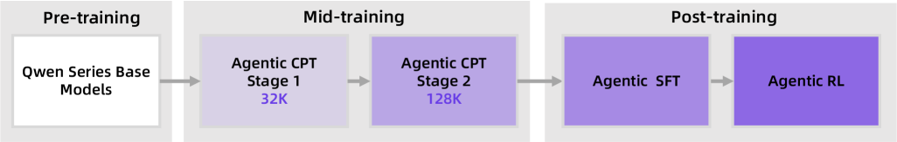
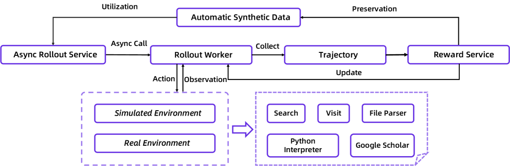
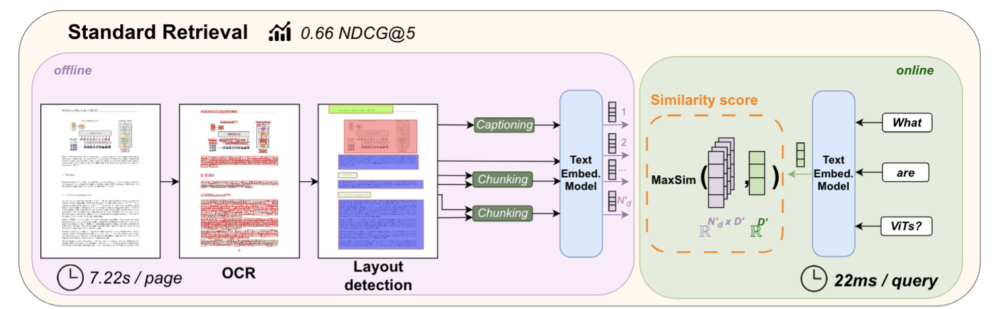
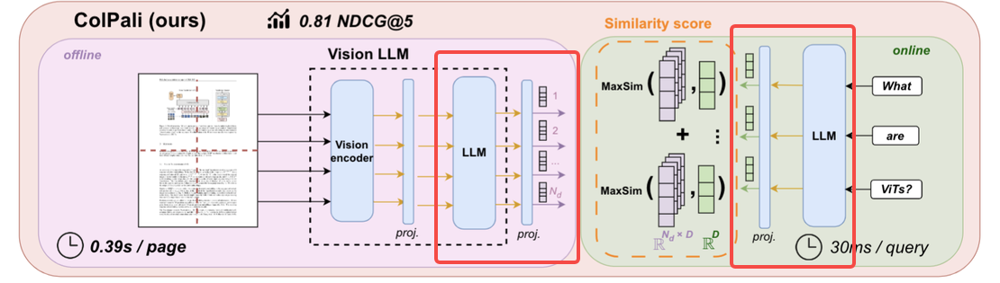
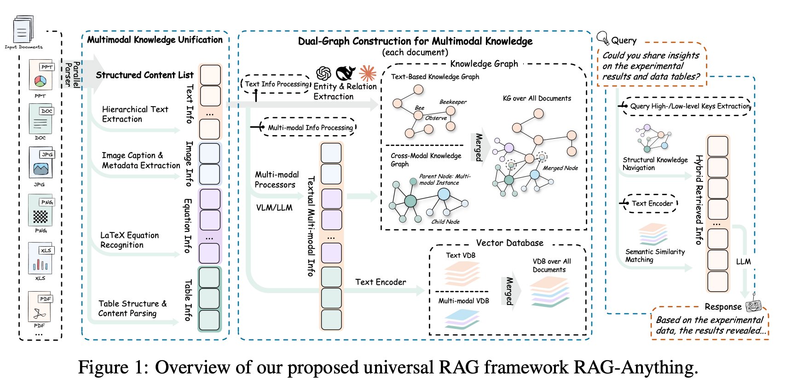

因为工作需要，最近终于有空能够再次深入去学习主要的 RAG 框架设计。但开始动手前，有一些前置问题我们要想清楚：RAG 的最终目的是做到什么？RAG 作为 LLM 的外部知识补充，是服务于 LLM 系统的（现在常常是 Agent 系统），用来帮助用户解决具体问题。现在大家常用 Agent 写代码、做资料调研，未来 Agent 将会更具自主性，以至于大家常常畅想 Agent 能自己端到端开发软件甚至买卖股票。但对于 LLM 本身不知道或者容易出现幻觉的知识，比如私有的一些文档、内部的讨论、特定项目的架构准则，如果想让 Agent 更能执行好，我们都得尽可能把这些知识装进 LLM 的上下文里面。其中，一些精炼的准则类知识可以直接注入上下文；但另外一些知识规模非常庞大，无法直接塞进 prompt，这时就需要 RAG 来帮助系统动态检索有效信息。所以 RAG 面向的是庞大的信息库，要能根据用户的输入与偏好，找到最有价值的信息，但自然也要兼顾检索效率。
我也越来越觉得，RAG 的未来并不是更大的向量库，而是演化成 Agent 的 Context Layer：它负责组织外部知识、长期记忆、多模态证据与工具结果，为模型动态构造可信上下文。本文会从几个近期有代表性的项目出发，尝试理解 RAG 正在往哪个方向演进。
本文将按照以下路线展开：
LLM 的知识、推理模式与语言结构都以隐式方式存储在模型参数中，这种参数化记忆虽然带来了极强的泛化能力与语言生成能力，但也天然存在若干根本性限制。首先，模型参数并不是结构化的，因而知识更像是一种统计上的分布。模型学习到的并非事实本身，而是 token 之间的共现规律，因此其知识召回往往是模糊的，这也是 hallucination 的根本来源。
其次，参数化知识天然不可动态更新。模型一旦完成预训练，其知识便被固化进权重中，无法像数据库一样实时修改。当外部世界发生变化，模型并不会自动获得这些新知识，因此会产生严重的 knowledge staleness 问题。
此外，LLM 还缺乏真正的长期记忆能力。尽管近年来上下文长度不断扩展，但更长的上下文并不等价于长期记忆。随着 context 增大，模型仍会面临 attention dilution、retrieval difficulty 与 lost-in-the-middle 等问题 [Lost In the Middle]，因此 Infinite Context ≠ Infinite Memory，因而无法像人类一样持续积累经验和长久的记忆。这是我最感兴趣的部分了，因为一个好的长久记忆是很难的，我常常在 coding 的时候就发现，前几轮 session 提出的要求 Agent 在最新的 session 又忘记了，显然是淹没在上下文里面了；切换新 Agent 更是灾难，只得尽量把想到的要求都存到说明文档里面，维护成本很高；一个长期能记住用户偏好、能够提供跨 Agent 共享记忆的系统，我认为会很有价值。
RAG 本质上是通过动态知识检索能力，来解决纯 LLM 在知识、记忆上的痛点。它可以在推理阶段动态从外部知识库中检索最新信息，使模型无需重新训练即可访问实时知识。因此，现在模型负责推理，外部系统负责记忆，就像计算机系统一样，计算和存储边界被分得很清楚。这里我们也能看到，这只对于记录下来的信息有效，而对于那些在人类沟通中传播、存在于人类大脑的知识，RAG 仍然很难有效触及。
其次，RAG 通过证据约束缓解了 hallucination 问题。LLM 不天然追求事实正确，而 RAG 会在生成前检索相关文档、代码、日志或数据库内容，并将这些证据注入上下文，使模型能够基于证据生成。因此，RAG 并没有彻底消除 hallucination，而是通过证据来约束生成空间，提高生成内容的可信度。
此外，RAG 能访问私有知识，大量企业关键知识存储在内部的 Wiki、Codebase 和聊天软件中。传统 LLM 无法直接访问这些数据，而 RAG 允许系统在运行时动态接入这些私有知识，不需要微调模型就能让系统理解这些 domain-specific 的知识。
目前仅靠模型参数已经无法支撑复杂 Agent 系统的需求，系统能力开始越来越依赖外部 Harness runtime 与上下文组织能力。
随着 LLM 被广泛用于 coding、search 甚至 enterprise workflow 等高风险任务，错误成本迅速上升，纯模型架构也开始暴露出明显的现实世界边界。因此，现代 AI 系统正在从纯模型逐渐演化为"模型 + Memory + Tools + Environment"的现代 Agent 系统，常被称为 Harness Engineering。其中，RAG 往往只是 Harness Engineering 的一个子模块。如果类比到计算机，RAG 类似于文件系统，而 Harness Engineering 则是操作系统。


| 维度 | Traditional / Naive RAG | Advanced RAG | GraphRAG | Agentic RAG |
|---|---|---|---|---|
| 数据源 | 文档为主：PDF、Markdown、网页、wiki、FAQ、内部知识库 | 文档为主：PDF、Markdown、网页、wiki、FAQ、内部知识库 | 文档集合 + 实体/关系/事件，通常来自大量非结构化文档 | 文档集合 + 工具调用：网页、数据库、API、工具、代码库、日志、Slack、搜索引擎、私域文档 |
| 检索方式 | embedding similarity search，直接找 top-k chunks | hybrid search、reranker | 先构建 entity/relation graph，再做 graph search、路径检索 | agent 根据任务动态决定搜什么、查哪里、是否继续检索；多轮搜索 + 工具调用 |
| 推理方式 | retrieve once → generate once；LLM 基于 top-k chunk 直接回答 | retrieve + rerank + compress 后回答；推理仍主要发生在最终 LLM generation 阶段 | 基于实体、关系做多跳推理和全局综合 | plan → search → read → reflect → search again → synthesize；边检索边推理 |
在上述几类 RAG 路线中，我个人最感兴趣的是 Agentic RAG，因为它开始把检索从静态 pipeline 演化为动态的推理过程。
Technical report：[TongYi DeepResearch]
TongYi 的训练包括了三个阶段，基于通用语料的 Pre-training、基于 Agentic 行为语料的 Mid-training 和 Post-training。该技术报告主要阐述了 Mid-training 和 Post-training 的故事。

我在这里总结下我个人印象非常深刻的地方：
传统 RAG 更多依赖 embedding 相似度检索，模型通常只在 retrieval 之后做最终生成；而 Agentic RAG 会主动拆解问题，并自主决定需要补充哪些证据、检索哪些内容。此时，推理与检索不再是严格串行的两个阶段，而是交织在一起的动态过程，本质上是把更多算力预算分配到了 test-time reasoning 上。
更让我印象深刻的是，它没有把 Deep Research 当成一个单纯调提示词然后 Tool Call 的推理 Workflow，而是把它变成了一个完整的训练问题，在训练时就用 Agent 语料让模型学习了高质量轨迹与策略优化。也就是说，它不是在推理时临时组装一个 Agent，而是在训练一个 Agent。
TongYi 的方案主要包含了如下要素：
τ 代表模型思考的过程核心 Agent Loop 由 react_agent.py 实现，该文件实现了一个 Loop，在 Loop 中的每一轮模型都能够自主决定调用什么 Tool，并获得 Tool 执行结果，拿到相关结果直到满足终止条件（即模型自主判断决定终止或者超出轮次、Token 上限）：
question = input["question"]
messages = [system_prompt, user(question)]
while budget_not_exceeded:
output = LLM(messages)
messages.append(assistant(output))
if contains_final_answer(output):
break
if contains_tool_call(output):
tool_name, tool_args = parse_tool_call(output)
result = call_tool(tool_name, tool_args)
messages.append(user(tool_response(result)))
return extract_answer(messages)
可用的 Tool 则定义在了 prompt.py，其定义了 Tool 的功能以及调用的格式还有预期的返回格式。
You are provided with function signatures within <tools></tools> XML tags:
<tools>
{"type": "function", "function": {"name": "search", "description": "Perform Google web searches then returns a string of the top search results. Accepts multiple queries.", "parameters": {"type": "object", "properties": {"query": {"type": "array", "items": {"type": "string", "description": "The search query."}, "minItems": 1, "description": "The list of search queries."}}, "required": ["query"]}}}
{"type": "function", "function": {"name": "visit", "description": "Visit webpage(s) and return the summary of the content.", "parameters": {"type": "object", "properties": {"url": {"type": "array", "items": {"type": "string"}, "description": "The URL(s) of the webpage(s) to visit. Can be a single URL or an array of URLs."}, "goal": {"type": "string", "description": "The specific information goal for visiting webpage(s)."}}, "required": ["url", "goal"]}}}
1. The 'arguments' JSON object must be empty: {}.
具体 Tool 的实现逻辑则被定义在了诸如 tool_python.py、tool_visit.py 等文件中。其中 visit 工具值得一提，它用于提取网页摘要，但不是简单返回原文，而是结合了网页内容和当前目标，用模型提取了总结，类似于一个 subagent。
需要说明的是，当前 repo 主体开源的是 ReAct 推理框架，并没有完整公开 TongYi DeepResearch 的训练代码与训练数据。这一点在 FAQ.md 有明确说明：训练数据不开放，Heavy Mode 也未完全开源。因此，Mid-training / Post-training 主要需要结合技术报告理解。
该方案包含了多个阶段，其中 Pre-training 用的是预训练好的 Qwen 模型，主要是让模型先具备通用能力和基础世界知识，DeepResearch 正是基于这个底座实现的。而 CPT 则是在其基础上额外引入了 Agentic 相关的数据进行训练 [Scaling Agents via Continual Pre-training]，CPT 过程中也会混一部分通用数据，防止模型性能下降。

而 Post-Training 也包含了两阶段，即 SFT 和 RL。SFT 的数据上是一条完整的 trajectory，包含问题、<think>、<tool_call>、<tool_response>、<answer>，样例数据放在了 sample_traj.json 里面。目的是先用高质量样本做监督微调，让模型学会正确输出轨迹格式并合理使用工具。SFT 之后，则是端到端的 RL，报告里使用了 GRPO 算法，通过检查 LLM 最终的输出是否和 Ground Truth 一致，系统返回 Reward 用来优化模型输出。SFT 中模型主要还是在模仿给定好的轨迹，但不等于真正最优，也没有直接优化最终目标，这里 RL 则是为了进一步优化任务的成功率，让模型能找出更优的路径。GRPO 算法这部分就直接搬过来了，报告里面写得也比较具体。

ColPali 可以说是多模态 RAG 比较经典的一个项目，在此之前的经典文档处理管线是 PDF → OCR 文字提取 → 排版提取 → 文本分块 → 文本 Embedding → 向量检索。ColPali 的做法则更为端到端，直接用图片做检索干掉了 OCR 管线；将 VLM 改造为多向量的检索器，可以用于文本、图像的 embedding 构建，最后基于 token、patch 粒度的相似度进行召回。项目详细阐述了视觉编码、文本编码和具体的检索方法。
这个工作我认为最有贡献的地方：
首先是利用了预训练 VLM 将完整的图像作为输入，这里相比较于仅使用 OCR 信息保留得更加充分，能包含更多细节。
ColPali 使用的 MaxSim 方案，保留了 token、patch 粒度的 embedding，这样其实更容易保持局部信息；不然如果仅仅使用文档粒度的 embedding，像 pdf 中的大量细节：字体大小、表格单元和数字都容易被平均掉。
在这部分会详细梳理一遍 ColPali 的计算流。ColPali 运用了在大规模图像文本数据上预训练过的 VLM，它们天然具有 OCR 能力，能够理解排版并支持多语言。对于视觉部分，ColPali 使用了 VLM 的 Vision Encoder 通常是 ViT，首先将图片分割为固定大小的 patch（14×14 像素），每个 patch 被编码为一个特征向量。对于 448×448 的图片，会得到 32×32 = 1024 个 patch 特征，这里每个特征的维度高达 1024 维。patch 特征会经过一个投影层（VLM 自带，不会额外训练），将视觉的 Embedding 投影到文本空间，再拼接 Prompt "Describe the image in Detail"，最后经过 LM 的交叉后输出 2048 维的 Hidden States。由于维度巨大，因此 ColPali 增加了一个额外的投影层，将 Hidden States 投影到 128 维，投影函数如下：
def forward(self, *args, **kwargs) -> torch.Tensor:
outputs = self.model(*args, output_hidden_states=True, **kwargs)
last_hidden_states = outputs.hidden_states[-1] # (B, seq_len, 2048)
proj = self.custom_text_proj(last_hidden_states) # (B, seq_len, 128)
proj = proj / proj.norm(dim=-1, keepdim=True)
proj = proj * kwargs["attention_mask"].unsqueeze(-1)
return proj
文本编码部分和图像类似，只是不同于图像的 patch，这里直接使用了文本的 token 构造 LM 的输入，同样地也取到了最后的 Hidden State，经过投影层也转变为 128 维。
ColPali 另外用到了 MaxSim 算法，这个算法的核心思想是让 query 的每个 token 单独去找最像它的页面上的局部区域，最后把所有词的最佳命中分数累加，得到该页面和查询的相关性。
def score_multi_vector(qs, ps, batch_size=128, device=None):
scores_list = []
for i in range(0, len(qs), batch_size):
scores_batch = []
# padding 到相同长度
qs_batch = pad_sequence(qs[i:i+batch_size], batch_first=True)
for j in range(0, len(ps), batch_size):
ps_batch = pad_sequence(ps[j:j+batch_size], batch_first=True)
# einsum: 计算所有 query token 与所有 doc token 的相似度
# "bnd,csd->bcns": batch_q × batch_d × q_len × d_len
scores_batch.append(
torch.einsum("bnd,csd->bcns", qs_batch, ps_batch)
.max(dim=3)[0] # 每个 query token 取 max
.sum(dim=2) # 跨所有 query token 求和
)
scores_list.append(torch.cat(scores_batch, dim=1))
return torch.cat(scores_list, dim=0)
ColPali 收集了大规模的 PDF 文档数据集，包含每页文档图片和对应的文本查询。其中正例使用了查询对应的文档页，而负例则使用了同一 batch 中的其他文档页面，训练的话基于对比学习，这里复习下常用于对比学习的 InfoNCE Loss，核心思想是拉近正例和 Query 的 embedding。

具体的可训练参数在上图圈出来了，其中 LLM 部分仅使用了 LoRA 进行微调：
q_proj / k_proj / v_proj / o_projup_proj / down_proj / gate_projcustom_text_proj 这个检索投影头也被纳入训练目标Repo Link: https://github.com/HKUDS/RAG-Anything
有些项目一看名字就很有野心，比如 RAG-Anything。刚开始我以为多模态 RAG 的难点就是，图片送 VLM 转成文字，表格也转成 Markdown，公式转 LaTeX，至于音频之类的也通过 ASR 转为文字，之后都在纯文本模态下面处理。但理了一遍代码后才发现，真正困难的是理清楚各种数据之间的逻辑关系，比如很多论文都有一些文本化的结论，但支撑结论的往往是表格，而表格如果简单转成 Markdown，基本不太可能用语义检索到。
RAG-Anything 的核心思想是不要把所有东西粗暴地压成文本，而是把 text、image、table、equation、chart 都当成知识实体，然后建立它们之间的逻辑关系。和单纯只看语义相似度不同，RAG-Anything 想做的是找到证据，举个例子如果我们想了解论文中的某张图解释了论文里面的哪个指标，这其实需要模型能理解图表和文字之间的逻辑关系。

整体看 RAG-Anything 基于 LightRAG 框架，拓展了额外的多模态能力。个人看下来收获最大的点是：
知识的处理与组织是 RAG 管线的基础，由于错误会沿着管线逐步累积，因此数据的初始处理与存储结构往往是整个 RAG 系统中最关键的一环。RAG-Anything 采用了大量的工具处理多模态数据，并将其组织为知识图谱的形式，这种方式兼顾了数据的细节与上下文，而使用文档切片并编码为 embedding 的项目往往难以平衡好这两点。
RAG-Anything 首先统一地处理了多个模态的信息，具体而言是先识别文档格式，然后调用不同的处理工具处理为结构化的知识实体；比如 PDF 格式的文档，会按页解析，抽文本块，并识别图、表、公式，统一输出 content_list（知识实体的列表，格式上包括类型和原始数据）。下面是一段伪代码：
async def parse_document(file_path):
cache_key = build_cache_key(file_path, parser, parse_method, kwargs)
cached = await parse_cache.get(cache_key)
if cached and cache_is_valid(cached, file_path, parser, parse_method, kwargs):
return cached.content_list, cached.doc_id
ext = suffix(file_path)
if ext == ".pdf":
content_list = parser.parse_pdf(file_path, output_dir, method=parse_method, **kwargs)
elif ext in IMAGE_EXTS:
content_list = parser.parse_image(file_path, output_dir, **kwargs)
elif ext in OFFICE_OR_HTML_EXTS:
content_list = parser.parse_office_doc(file_path, output_dir, **kwargs)
else:
content_list = parser.parse_document(file_path, output_dir, method=parse_method, **kwargs)
doc_id = hash_content_list(content_list)
await parse_cache.upsert(cache_key, content_list, doc_id, file_mtime, parse_config)
return content_list, doc_id
在处理好不同的知识实体后，Rag-Anything 会结合周边上下文调用 LLM/VLM 生产对该实体的描述，并会保存好相关的 metadata，比如 page_idx 和 type。系统会先进行实体与关系抽取，随后将处理后的实体作为节点插入知识图谱；在边的处理上，不仅会基于关系建边，也会考虑从属关系，比如从图像中抽取的实体会具有与该图像的从属关系。
至于检索过程，会先基于 query 和 node 的语义相似度找到最相关的 node，之后 LightRAG 会将这些节点的信息都拼起来加入 LLM 的上下文中。
看完这些项目，能渐渐了解 RAG 系统之一二。一个干净有效的数据库往往是基石，现在很多 RAG 项目都花费了大量精力在这上面，无论是上面介绍到的 RAG-Anything，还是 GraphRAG，都聚焦于数据处理和知识图谱的构建。在此之后则是 query 与 doc 的相关性计算，比如 ColPali 就优化了相关性的计算。最后召回的内容我们会塞进 LLM 上下文里面，让其做最后的生成。目前业界基本将上述流程视为三个相对独立的阶段，即数据处理、相似度召回和 LLM 生成，但也有部分 Agentic RAG 项目试图融合二、三阶段，比如 TongYi DeepResearch。
在看 RAG 的链路时，我常常能联想到推荐系统，比如目前 RAG 只考虑到了相关性，但个性化也是影响用户体验的重要因素。举个例子，不同用户搜索"苹果"，不同用户的意图天差万别，有的用户意图可能是苹果手机，也有的用户可能是水果。这里一个可能的解决方案是，我们可以不仅仅使用 query 做查询，还可以加入用户的上下文、历史偏好特征等，这样能更好地提升 RAG 的相关性。
第一，RAG 不能保证召回信息对。它只能提高生成正确的概率。只要没有召回对、chunk 不完整、文档本身错，答案仍然会出错。
第二，RAG 不擅长处理冲突信息。旧文档说 A，新文档说 B，聊天里说 C。RAG 通常会混合总结，但不会天然知道哪个是权威版本、哪个时间上更新、哪个适用当前地区或版本。
第三，LLM 推理时仍不能保证对。检索到正确上下文以后，模型仍可能 lost-in-the-middle，或者出现算错、归因错、漏掉关键约束的问题。尤其是实验分析、代码库理解这种复杂场景。
从 RAG 的发展来看，几条路径逐渐浮现于眼前。
RAG 逐渐从找相关内容逐渐演化到找有效证据。这很依赖一个良好的信息存储结构，比如知识图谱。同时需要具备动态更新的能力，哪些知识被更新了，哪里有 conflict，这些问题都需要被处理好。因此知识图谱需要是可以被更新的，同时每个节点都要带上更新时间与历史的更新记录。
RAG 将能支持更强的多模态能力，现在主流还是通过 VLM/OCR 将图像、表格等信息转换到文本模态，但细节多少会有丢失。而一个理想的表征应该是能够保持足够的信息细节同时也能兼顾上下文的，我想 embedding 形式的表征应该是更优的选择。
Agentic RAG 支持多轮反思和工具调用，但目前还是难以构建跨平台、跨项目的 workflow。我们有理由相信，如果 Agent 能获得和人类同等质量的输入，Agent 的决策是可以信赖的。因此一个理想的 RAG 系统应该能达到优秀人类工程师获取信息的水平，即系统会先理解任务、拆解问题，并根据需求选择文档/图谱/数据库/API/记忆等信息源，之后检索跨模态证据链，再做好时效判断与结果生成。单纯依靠 LLM 的泛化能力很难想做好上述的事情，因此 RAG 能力也应该是可被训练的，可能会成为未来 post-train 的重要一环。
Because of work, I finally recently had time to dive deeply into the design of mainstream RAG frameworks again. But before getting hands-on, there are some prerequisite questions we need to think through clearly: what is the ultimate goal of RAG? As an external knowledge supplement for LLMs, RAG serves LLM systems, which today are often Agent systems, helping users solve concrete problems. People now commonly use Agents for coding and research, and in the future Agents will become even more autonomous, to the point that many people imagine Agents independently developing software end to end or even trading stocks. But for knowledge that LLMs do not inherently know well or are prone to hallucinate about, such as private documents, internal discussions, or architecture guidelines for a specific project, if we want Agents to execute better, we need to put as much of that knowledge as possible into the LLM's context. Some concise guideline-like knowledge can be injected directly into the context; but other knowledge is far too large to fit directly into a prompt, and that is where RAG is needed to help the system dynamically retrieve useful information. So RAG is aimed at large information repositories: it needs to find the most valuable information based on user input and preferences, while naturally also balancing retrieval efficiency.
I also increasingly feel that the future of RAG is not a larger vector database, but its evolution into the Context Layer of Agents: it organizes external knowledge, long-term memory, multimodal evidence, and tool results to dynamically construct trustworthy context for the model. This article starts from several representative recent projects and tries to understand which direction RAG is evolving toward.
This article will follow the route below:
An LLM's knowledge, reasoning patterns, and language structures are all stored implicitly in model parameters. While this parametric memory brings extremely strong generalization and language generation ability, it also comes with several fundamental limitations. First, model parameters are not structured, so knowledge behaves more like a statistical distribution. The model does not learn facts themselves, but rather co-occurrence patterns among tokens; as a result, its knowledge recall is often fuzzy, which is also the fundamental source of hallucination.
Second, parametric knowledge cannot be updated dynamically by nature. Once pretraining is complete, knowledge is fixed in the weights and cannot be modified in real time like a database. When the external world changes, the model does not automatically acquire that new knowledge, leading to a serious knowledge staleness problem.
In addition, LLMs still lack true long-term memory. Although context windows have expanded continuously in recent years, longer context is not equivalent to long-term memory. As context grows, models still face problems such as attention dilution, retrieval difficulty, and lost-in-the-middle [Lost In the Middle], so Infinite Context ≠ Infinite Memory. As a result, they still cannot continuously accumulate experience and long-lasting memory the way humans can. This is the part that interests me most, because good long-term memory is very hard. I often notice while coding that requirements mentioned a few sessions ago get forgotten by an Agent in the latest session, clearly buried in the context; switching to a new Agent is even more disastrous, and I can only try to store every requirement I think of in documentation, which is expensive to maintain. A system that can remember user preferences over the long term and provide memory shared across Agents would, in my view, be very valuable.
At its core, RAG uses dynamic knowledge retrieval to address the pain points that pure LLMs have around knowledge and memory. During inference, it can dynamically retrieve the latest information from an external knowledge base, allowing the model to access up-to-date knowledge without retraining. So now the model is responsible for reasoning, while the external system is responsible for memory. Like in a computer system, the boundary between computation and storage is made very clear. We can also see here that this only works for information that has been recorded; for knowledge that is transmitted through human communication and exists only in human brains, RAG is still very hard-pressed to reach it effectively.
Second, RAG mitigates hallucination through evidence grounding. LLMs do not inherently optimize for factual correctness, whereas RAG retrieves relevant documents, code, logs, or database contents before generation and injects those pieces of evidence into the context, enabling the model to generate based on evidence. So RAG does not completely eliminate hallucination; rather, it constrains the generation space with evidence and improves the trustworthiness of the generated content.
In addition, RAG can access private knowledge. A great deal of critical enterprise knowledge is stored in internal wikis, codebases, and chat tools. Traditional LLMs cannot directly access these data sources, while RAG allows the system to dynamically connect to this private knowledge at runtime, enabling the system to understand domain-specific knowledge without fine-tuning the model.
At present, model parameters alone can no longer support the needs of complex Agent systems. System capability is increasingly dependent on external harness runtime and context organization ability.
As LLMs are widely used for high-risk tasks such as coding, search, and even enterprise workflows, the cost of mistakes rises rapidly, and the boundary of pure model architectures in the real world becomes increasingly obvious. As a result, modern AI systems are gradually evolving from pure models into modern Agent systems of "Model + Memory + Tools + Environment," often referred to as Harness Engineering. In this setup, RAG is often only one submodule of Harness Engineering. By analogy with computers, RAG is like the file system, while Harness Engineering is like the operating system.
| Dimension | Traditional / Naive RAG | Advanced RAG | GraphRAG | Agentic RAG |
|---|---|---|---|---|
| Data source | Primarily documents: PDFs, Markdown, web pages, wikis, FAQs, internal knowledge bases | Primarily documents: PDFs, Markdown, web pages, wikis, FAQs, internal knowledge bases | Document collections + entities/relations/events, usually extracted from large volumes of unstructured documents | Document collections + tool calls: web pages, databases, APIs, tools, code repositories, logs, Slack, search engines, private documents |
| Retrieval method | embedding similarity search, directly find top-k chunks | hybrid search, reranker | First build an entity/relation graph, then perform graph search and path retrieval | The agent dynamically decides what to search, where to look, and whether to continue retrieving based on the task; multi-round search + tool calls |
| Reasoning method | retrieve once → generate once; the LLM answers directly based on the top-k chunks | Answer after retrieve + rerank + compress; reasoning still mainly occurs in the final LLM generation stage | Multi-hop reasoning and global synthesis based on entities and relations | plan → search → read → reflect → search again → synthesize; reason while retrieving |
Among the RAG directions above, the one I find most interesting is Agentic RAG, because it begins to evolve retrieval from a static pipeline into a dynamic reasoning process.
Technical report: [TongYi DeepResearch]
TongYi's training includes three stages: Pre-training on general corpora, Mid-training on Agentic behavior corpora, and Post-training. This technical report mainly explains the Mid-training and Post-training story.
Here I will summarize what left the deepest impression on me personally:
Traditional RAG relies more on embedding-similarity retrieval, and the model usually only performs final generation after retrieval; in contrast, Agentic RAG proactively decomposes the problem and independently decides what additional evidence it needs and what content to retrieve. At that point, reasoning and retrieval are no longer two strictly serial stages, but an intertwined dynamic process. In essence, more compute budget is being allocated to test-time reasoning.
What impressed me even more is that it does not treat Deep Research as a simple reasoning workflow built by prompt tuning plus Tool Call. Instead, it turns it into a full training problem, using Agent data during training to teach the model high-quality trajectories and policy optimization. In other words, it is not assembling an Agent temporarily at inference time; it is training an Agent.
TongYi's approach mainly includes the following elements:
The core Agent Loop is implemented in react_agent.py. That file implements a loop in which, on each round, the model can autonomously decide what tool to call and obtain the tool execution result, continuing until a termination condition is met (that is, the model autonomously decides to stop, or the round/token limit is exceeded):
question = input["question"]
messages = [system_prompt, user(question)]
while budget_not_exceeded:
output = LLM(messages)
messages.append(assistant(output))
if contains_final_answer(output):
break
if contains_tool_call(output):
tool_name, tool_args = parse_tool_call(output)
result = call_tool(tool_name, tool_args)
messages.append(user(tool_response(result)))
return extract_answer(messages)
The available tools are then defined in prompt.py, which specifies the tool capabilities, invocation formats, and expected return formats.
You are provided with function signatures within <tools></tools> XML tags:
<tools>
{"type": "function", "function": {"name": "search", "description": "Perform Google web searches then returns a string of the top search results. Accepts multiple queries.", "parameters": {"type": "object", "properties": {"query": {"type": "array", "items": {"type": "string", "description": "The search query."}, "minItems": 1, "description": "The list of search queries."}}, "required": ["query"]}}}
{"type": "function", "function": {"name": "visit", "description": "Visit webpage(s) and return the summary of the content.", "parameters": {"type": "object", "properties": {"url": {"type": "array", "items": {"type": "string"}, "description": "The URL(s) of the webpage(s) to visit. Can be a single URL or an array of URLs."}, "goal": {"type": "string", "description": "The specific information goal for visiting webpage(s)."}}, "required": ["url", "goal"]}}}
1. The 'arguments' JSON object must be empty: {}.
The concrete tool implementation logic is defined in files such as tool_python.py and tool_visit.py. The visit tool is especially worth mentioning: it is used to extract webpage summaries, but instead of simply returning the original text, it combines webpage content with the current goal and uses a model to produce a summary, functioning somewhat like a subagent.
It is worth noting that the currently open-sourced main body of the repo is the ReAct inference framework. TongYi DeepResearch's full training code and training data have not been fully released. This is explicitly stated in FAQ.md: the training data are not open, and Heavy Mode has also not been completely open-sourced. Therefore, Mid-training / Post-training mainly needs to be understood together with the technical report.
This approach contains multiple stages. In Pre-training, it uses a pretrained Qwen model, mainly to first equip the model with general capabilities and basic world knowledge; DeepResearch is built on top of this foundation. CPT then further introduces Agentic-related data for training on top of that [Scaling Agents via Continual Pre-training], while also mixing in some general data during CPT to prevent model performance from declining.
Post-Training also includes two stages, namely SFT and RL. For the SFT data, each sample is a complete trajectory containing a question, <think>, <tool_call>, <tool_response>, and <answer>. Sample data are available in sample_traj.json. The goal is to first use high-quality samples for supervised fine-tuning so that the model learns to output the correct trajectory format and use tools appropriately. After SFT comes end-to-end RL. The report uses the GRPO algorithm: by checking whether the LLM's final output matches the Ground Truth, the system returns a reward to optimize the model output. In SFT, the model is still mainly imitating given trajectories, which does not necessarily mean the trajectories are truly optimal, nor does it directly optimize the final objective. RL here is therefore meant to further improve task success rate and allow the model to find better paths.
ColPali can be considered one of the classic projects in multimodal RAG. Before it, the classic document-processing pipeline was PDF → OCR text extraction → layout extraction → text chunking → text embedding → vector retrieval. ColPali is much more end-to-end: it retrieves directly on images and effectively eliminates the OCR pipeline. It turns a VLM into a multi-vector retriever that can build embeddings for both text and images, and finally performs recall based on similarity at the token and patch granularity. The project describes in detail the visual encoding, text encoding, and the concrete retrieval method.
What I consider this work's biggest contributions:
First, it uses a pretrained VLM with the complete image as input, which preserves information more fully than relying only on OCR, and can retain more details.
Second, ColPali uses the MaxSim scheme, preserving embeddings at the token and patch granularity, which makes it easier to retain local information. Otherwise, if one uses only document-level embeddings, many details in PDFs, such as font sizes, table cells, and numbers, are easily averaged away.
This section walks through ColPali's computation flow in detail. ColPali uses a VLM pretrained on large-scale image-text data. Such models naturally have OCR ability, can understand layout, and support multiple languages. For the visual part, ColPali uses the VLM's Vision Encoder, usually a ViT. It first splits the image into fixed-size patches (14×14 pixels), and each patch is encoded as a feature vector. For a 448×448 image, this yields 32×32 = 1024 patch features, each with dimensionality as high as 1024. The patch features then pass through a projection layer built into the VLM, without additional training, which projects the visual embedding into the text space. After that, the prompt "Describe the image in Detail" is concatenated, and the output after crossing through the LM is a 2048-dimensional Hidden State. Because the dimensionality is so large, ColPali adds an extra projection layer to project the Hidden States down to 128 dimensions. The projection function is as follows:
def forward(self, *args, **kwargs) -> torch.Tensor:
outputs = self.model(*args, output_hidden_states=True, **kwargs)
last_hidden_states = outputs.hidden_states[-1] # (B, seq_len, 2048)
proj = self.custom_text_proj(last_hidden_states) # (B, seq_len, 128)
proj = proj / proj.norm(dim=-1, keepdim=True)
proj = proj * kwargs["attention_mask"].unsqueeze(-1)
return proj
The text-encoding part is similar to the image side, except that instead of image patches, it directly uses text tokens to build the LM input. It likewise takes the final Hidden State and projects it to 128 dimensions through the projection layer.
ColPali additionally uses the MaxSim algorithm. The core idea of this algorithm is to let each token in the query independently find the local region on the page that most resembles it, and then accumulate the best-match score for every token to obtain the relevance between the page and the query.
def score_multi_vector(qs, ps, batch_size=128, device=None):
scores_list = []
for i in range(0, len(qs), batch_size):
scores_batch = []
# padding to the same length
qs_batch = pad_sequence(qs[i:i+batch_size], batch_first=True)
for j in range(0, len(ps), batch_size):
ps_batch = pad_sequence(ps[j:j+batch_size], batch_first=True)
# einsum: compute similarities between all query tokens and all doc tokens
# "bnd,csd->bcns": batch_q × batch_d × q_len × d_len
scores_batch.append(
torch.einsum("bnd,csd->bcns", qs_batch, ps_batch)
.max(dim=3)[0] # take max for each query token
.sum(dim=2) # sum across all query tokens
)
scores_list.append(torch.cat(scores_batch, dim=1))
return torch.cat(scores_list, dim=0)
ColPali collected a large-scale PDF document dataset containing each document-page image together with the corresponding text queries. For positives, it used the document page corresponding to the query; for negatives, it used other document pages within the same batch. Training is based on contrastive learning. Let me briefly revisit the InfoNCE Loss commonly used in contrastive learning, whose core idea is to bring the embeddings of positive examples and the query closer together.
The specific trainable parameters are circled in the figure above. In the LLM part, only LoRA was used for fine-tuning:
q_proj / k_proj / v_proj / o_projup_proj / down_proj / gate_projcustom_text_proj retrieval projection head is also included in the training objectiveRepo Link: https://github.com/HKUDS/RAG-Anything
Some projects sound ambitious just from the name, and RAG-Anything is one of them. At first I thought the challenge of multimodal RAG was simply to send images into a VLM and convert them into text, turn tables into Markdown, convert formulas into LaTeX, and convert audio and the like into text through ASR, then process everything under a pure text modality. But after going through the code, I realized that the truly difficult part is sorting out the logical relationships among different kinds of data. For example, many papers contain textual conclusions, but those conclusions are often supported by tables; and if a table is simply converted into Markdown, it is basically impossible to retrieve it through semantic search alone.
The core idea of RAG-Anything is not to crudely flatten everything into text, but to treat text, image, table, equation, and chart all as knowledge entities, and then establish logical relationships among them. Unlike approaches that look only at semantic similarity, RAG-Anything tries to find evidence. For example, if we want to understand which metric in a paper is explained by a particular figure, the model needs to understand the logical relationship between charts and text.
Overall, RAG-Anything is built on the LightRAG framework and extends it with additional multimodal capabilities. The point I personally gained the most from is this:
Knowledge processing and organization are the foundation of the RAG pipeline. Because errors accumulate step by step along the pipeline, the initial processing of the data and its storage structure are often the most critical part of the entire RAG system. RAG-Anything uses many tools to process multimodal data and organizes them in the form of a knowledge graph. This approach balances data detail and context, whereas projects that slice documents and encode them as embeddings often struggle to balance those two well.
RAG-Anything first processes information from multiple modalities in a unified way. Specifically, it first identifies the document format and then calls different processing tools to turn it into structured knowledge entities. For example, for a PDF document, it parses page by page, extracts text blocks, and identifies figures, tables, and formulas, ultimately outputting a content_list, a list of knowledge entities that includes type and raw data in its format. The following is a pseudocode example:
async def parse_document(file_path):
cache_key = build_cache_key(file_path, parser, parse_method, kwargs)
cached = await parse_cache.get(cache_key)
if cached and cache_is_valid(cached, file_path, parser, parse_method, kwargs):
return cached.content_list, cached.doc_id
ext = suffix(file_path)
if ext == ".pdf":
content_list = parser.parse_pdf(file_path, output_dir, method=parse_method, **kwargs)
elif ext in IMAGE_EXTS:
content_list = parser.parse_image(file_path, output_dir, **kwargs)
elif ext in OFFICE_OR_HTML_EXTS:
content_list = parser.parse_office_doc(file_path, output_dir, **kwargs)
else:
content_list = parser.parse_document(file_path, output_dir, method=parse_method, **kwargs)
doc_id = hash_content_list(content_list)
await parse_cache.upsert(cache_key, content_list, doc_id, file_mtime, parse_config)
return content_list, doc_id
After processing the different knowledge entities, Rag-Anything uses surrounding context together with an LLM/VLM to produce a description for each entity, and it also preserves relevant metadata such as page_idx and type. The system first performs entity and relation extraction, then inserts the processed entities as nodes into the knowledge graph. For edges, it not only builds them based on relations, but also considers subordinate relationships. For example, entities extracted from an image have a subordinate relationship to that image.
As for retrieval, it first finds the most relevant nodes based on semantic similarity between the query and the nodes, after which LightRAG concatenates the information from those nodes and inserts it into the LLM's context.
After going through these projects, I gradually began to understand part of what RAG systems are doing. A clean and effective database is often the cornerstone, and many current RAG projects spend enormous effort on this, whether RAG-Anything and GraphRAG discussed above, both of which focus on data processing and the construction of knowledge graphs. After that comes relevance computation between queries and documents; for example, ColPali improves how relevance is computed. Finally, the recalled content is placed into the LLM's context for final generation. At present, the industry largely treats the process above as three relatively independent stages: data processing, similarity-based recall, and LLM generation. However, some Agentic RAG projects, such as TongYi DeepResearch, attempt to merge the second and third stages.
When looking at the RAG pipeline, I often think of recommender systems. For example, current RAG mainly considers relevance, but personalization is also an important factor affecting user experience. Take the query "apple": different users may mean very different things. Some may mean the iPhone, while others may mean the fruit. One possible solution here is that instead of using only the query, we can also incorporate the user's context, historical preference features, and so on, so as to better improve RAG relevance.
First, RAG cannot guarantee that it retrieves the right information. It can only increase the probability of generating a correct answer. If the right information is not retrieved, if chunks are incomplete, or if the document itself is wrong, the answer can still be wrong.
Second, RAG is not good at handling conflicting information. An old document says A, a new document says B, and a chat says C. RAG will usually produce a blended summary, but it does not naturally know which is the authoritative version, which one is more recent, or which applies to the current region or version.
Third, LLM reasoning still cannot be guaranteed to be correct. Even after retrieving the correct context, the model may still suffer from lost-in-the-middle, make calculation mistakes, assign incorrect attribution, or miss critical constraints. This is especially true in complex scenarios such as experimental analysis and codebase understanding.
From the development of RAG, several paths are gradually coming into view.
RAG is gradually evolving from finding relevant content to finding effective evidence. This depends heavily on a good information storage structure, such as a knowledge graph. At the same time, it also needs dynamic update capabilities: which pieces of knowledge were updated, where conflicts exist, and similar issues all need to be handled well. Therefore, the knowledge graph needs to be updatable, and each node should carry both update timestamps and historical update records.
RAG will support stronger multimodal ability. The mainstream approach today is still to convert images, tables, and other information into the text modality through VLM/OCR, but some details are inevitably lost. An ideal representation, however, should preserve sufficient informational detail while also retaining context. I suspect an embedding-based representation would be the better choice.
Agentic RAG supports multi-round reflection and tool use, but at present it is still difficult to build workflows that span platforms and projects. We have reason to believe that if an Agent can obtain inputs of the same quality as a human, then the Agent's decisions can be trusted. Therefore, an ideal RAG system should reach the level at which an excellent human engineer obtains information: the system first understands the task, breaks down the problem, and selects among information sources such as documents, graphs, databases, APIs, and memory; then retrieves cross-modal chains of evidence, makes judgments about timeliness, and finally generates the result. It is hard to imagine pure LLM generalization alone handling all of this well, so RAG capability itself should also be trainable, and may become an important part of future post-training.